At a glance
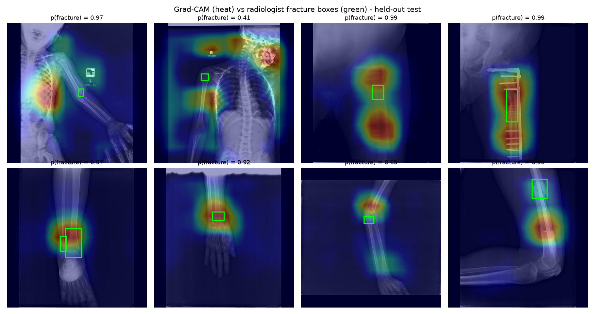
Why it matters
Missed fractures are among the most common diagnostic errors in emergency departments, often at night when no radiologist is on site. A model that reliably says "normal" (NPV 95 %) and points to suspicious regions can help triage the reading queue. It is not meant to replace the radiologist.
Method
Leak-free data. A 16×16 difference hash found 154 near-duplicate pairs. They are grouped so no X-ray appears in both train and test. Stratified (fracture × region) group split: 2,860 / 612 / 611.
Transfer learning. EfficientNetV2-B0 (ImageNet) with the stem frozen, a new head, AdamW + cosine schedule, EMA weights and a balanced loss.
Progressive resizing 288 → 352 → 416 px, so it trains on a 2-core laptop CPU in about 3 hours. Radiograph-safe augmentation (rotation, scale, flip, gamma, contrast).
Explainability. Grad-CAM on the last convolutional layer, scored with a pointing game against FracAtlas boxes.
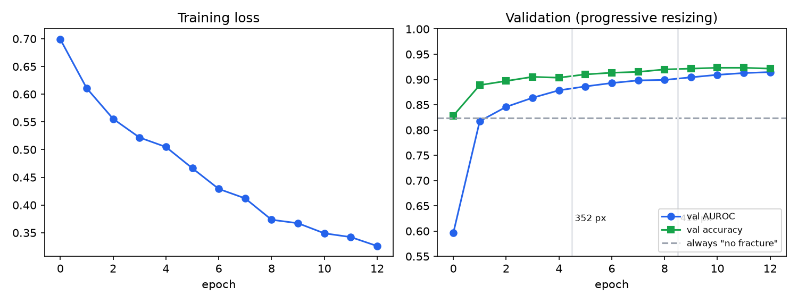
Results
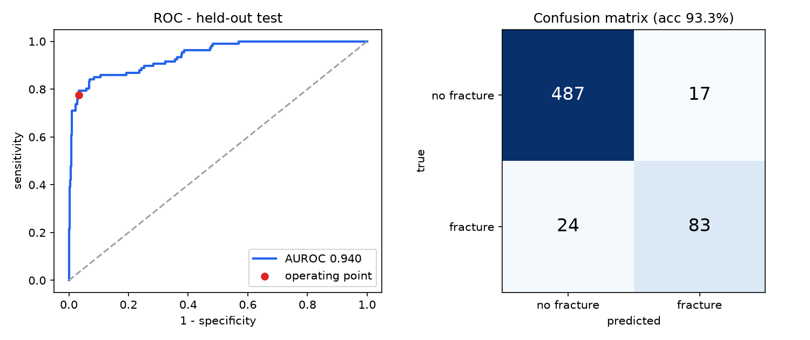
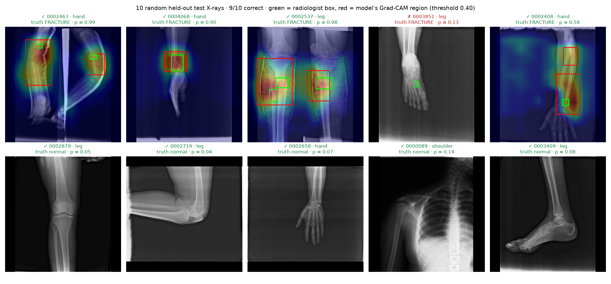
| Subgroup (test) | n | Accuracy | Sensitivity | Specificity |
|---|---|---|---|---|
| Hand | 229 | 88.2 % | 79.7 % | 91.5 % |
| Leg | 340 | 96.2 % | 74.4 % | 99.0 % |
| Hip | 27 | 96.3 % | 66.7 % | 100 % |
| Shoulder | 15 | 100 % | 100 % | 100 % |
| All, no orthopaedic hardware | 595 | 93.3 % | 74.7 % | 96.6 % |
Visual tour
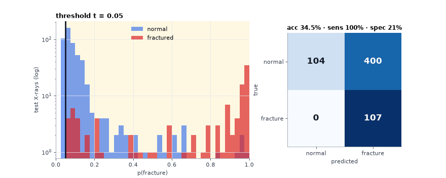
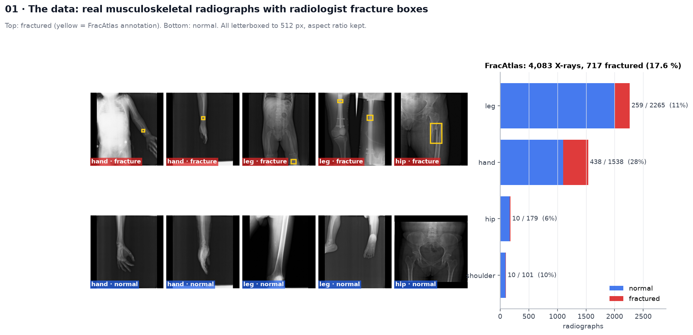
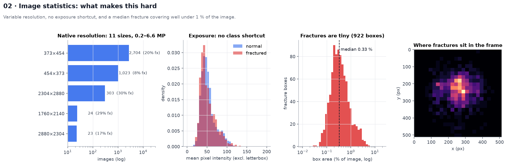
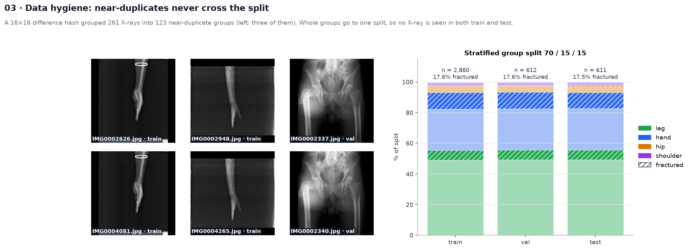
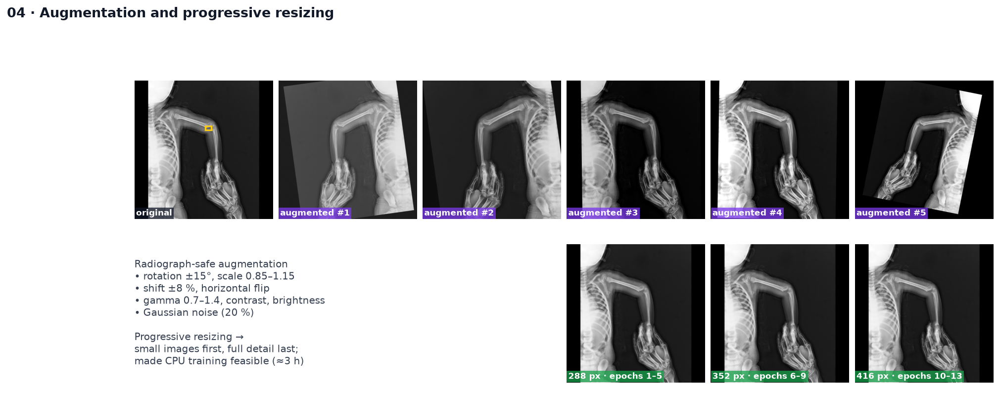
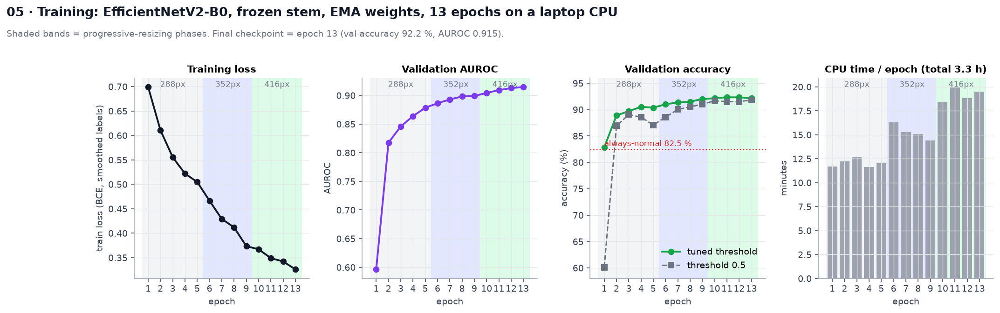
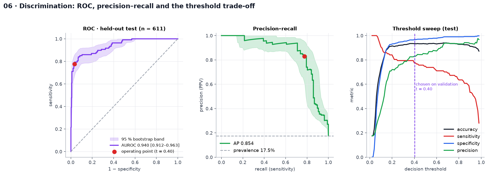
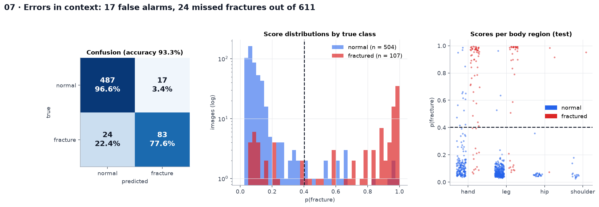
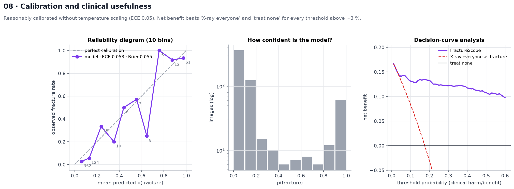
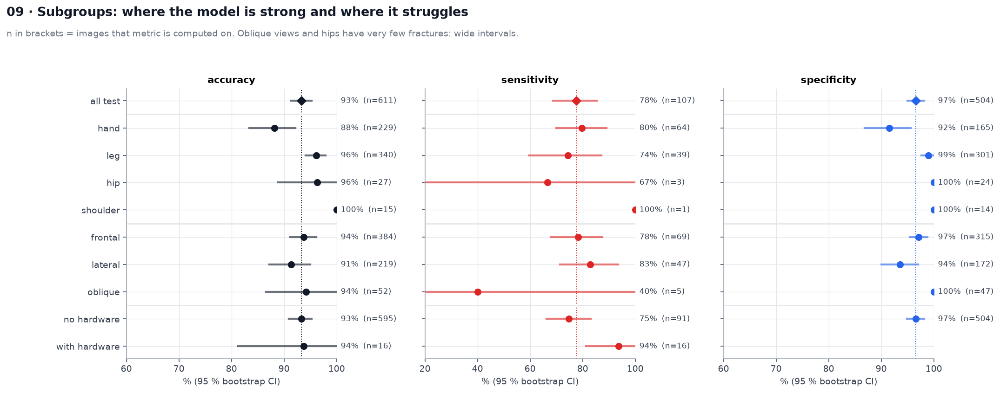
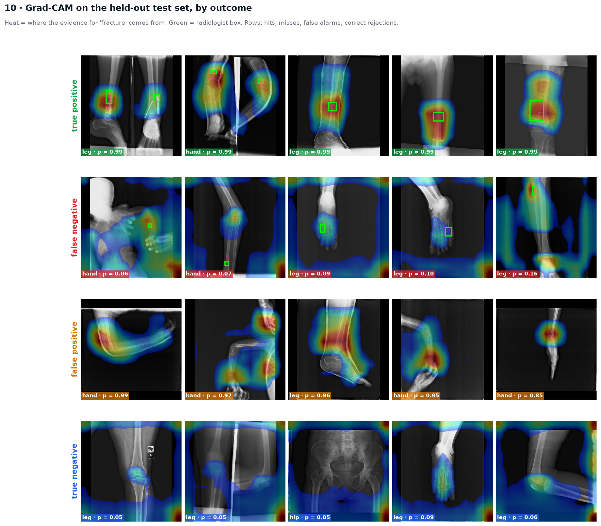
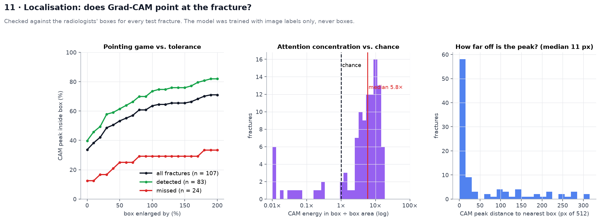
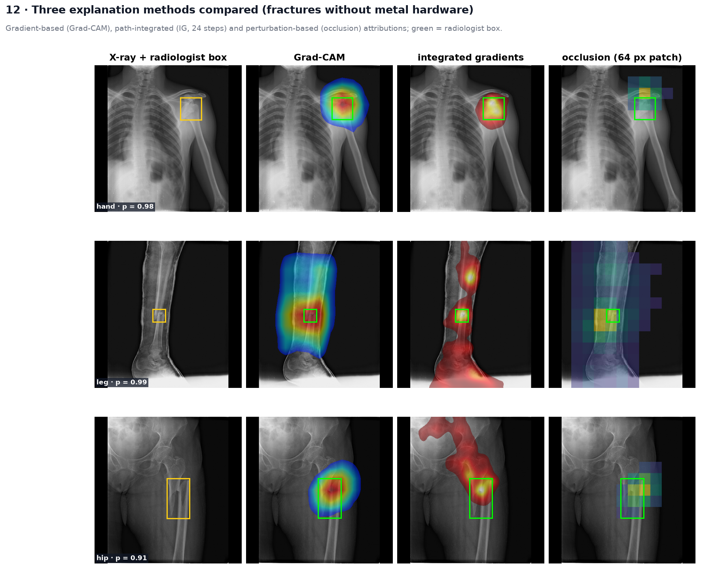
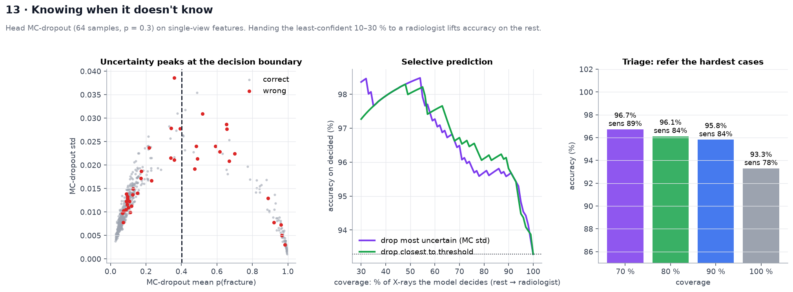
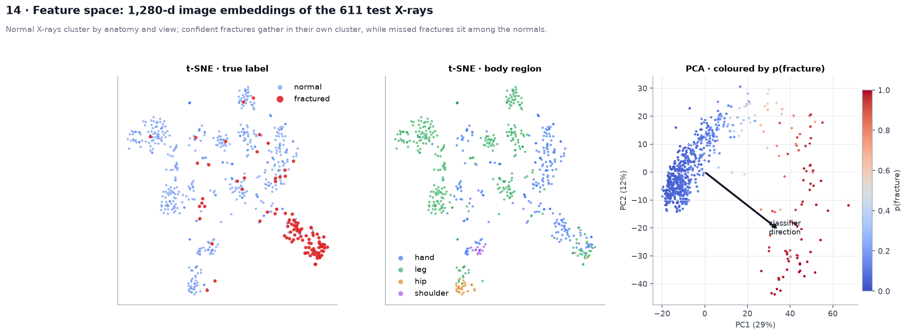
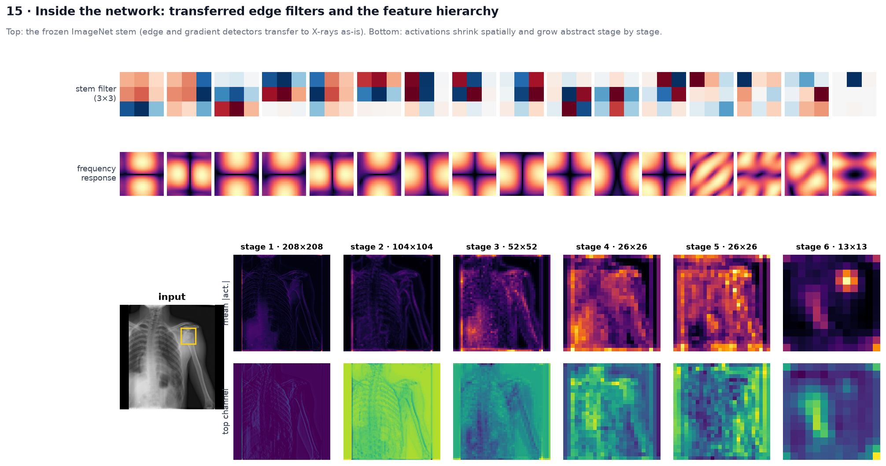
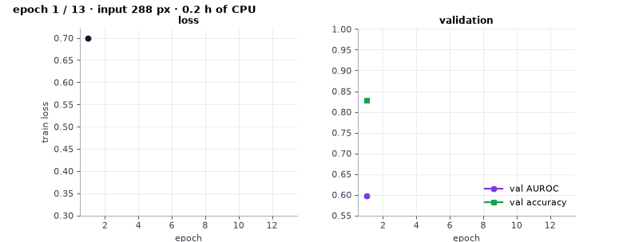
Limitations
- Misses about 1 in 5 fractures, mostly subtle hairline and oblique-view cases.
- Shortcut risk: 97 of 99 images with plates or screws are fractured, so results are also reported without hardware.
- I did not use the popular Kaggle multi-region set: its 8,863 images are about 178 X-rays copied by rotation, so the 99 % scores reported on it come from leakage.
- Single dataset, no external validation. Research prototype, not a medical device.